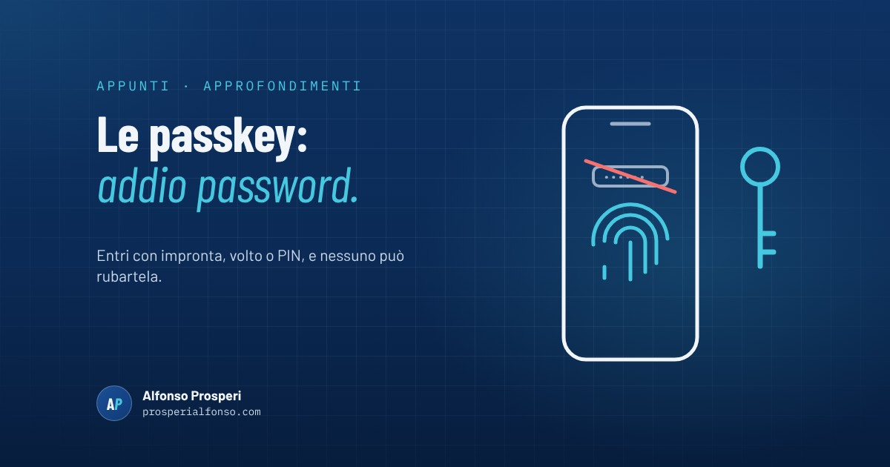

Le password sono il punto debole di quasi tutti i furti di account: si dimenticano, si riusano, si rubano con una mail falsa. Le passkey nascono per sostituirle. Google le ha introdotte a maggio 2023 e da ottobre 2023 le propone come modo predefinito per accedere. Oggi le supportano molti altri servizi.
Cosa sono
Una passkey è una chiave digitale che resta salvata sul tuo telefono o computer. Quando accedi, non scrivi nessuna password: sblocchi il dispositivo come fai di solito, con l'impronta, il riconoscimento del volto o il PIN, e il servizio ti riconosce.
Perché sono più sicure
- Non si possono rubare con il phishing. La passkey funziona solo sul sito vero: su un sito falso semplicemente non si attiva.
- Non c'è niente da indovinare o da riusare. Ogni passkey è diversa per ogni servizio.
- La tua impronta resta sul telefono. Al servizio non arriva il dato biometrico, solo la conferma che sei tu.
Come attivarla su Google
- Apri le impostazioni del tuo account Google, sezione Sicurezza.
- Cerca la voce Passkey e token di sicurezza e scegli di crearne una.
- Conferma con impronta, volto o PIN del dispositivo. Fatto.
Su Android la passkey viene salvata nel Gestore delle password di Google, su iPhone nel portachiavi di Apple, e si sincronizza sui tuoi dispositivi.
E gli altri servizi?
Sempre più siti e app offrono la passkey nelle impostazioni di sicurezza o al momento dell'accesso. Se vedi la proposta "Crea una passkey" o "Accedi con passkey", conviene accettarla, soprattutto per mail, negozi online e pagamenti.
Cosa tenere a mente
- Proteggi bene lo sblocco del telefono: chi sblocca il telefono può usare le passkey.
- Se cambi telefono, le passkey arrivano con il backup del tuo account Google o Apple.
- Per i servizi che non le supportano ancora, resta valido tutto quello che ho scritto su password sicure e verifica in due passaggi.